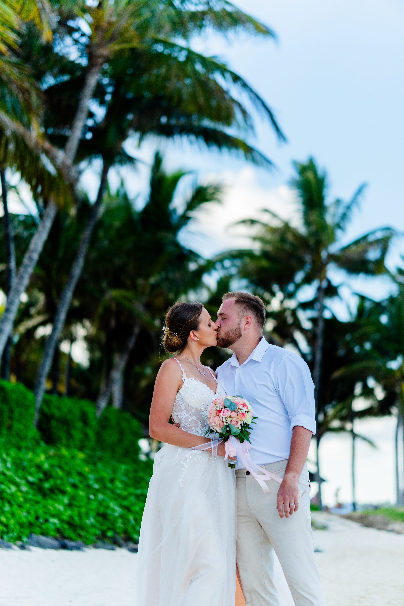
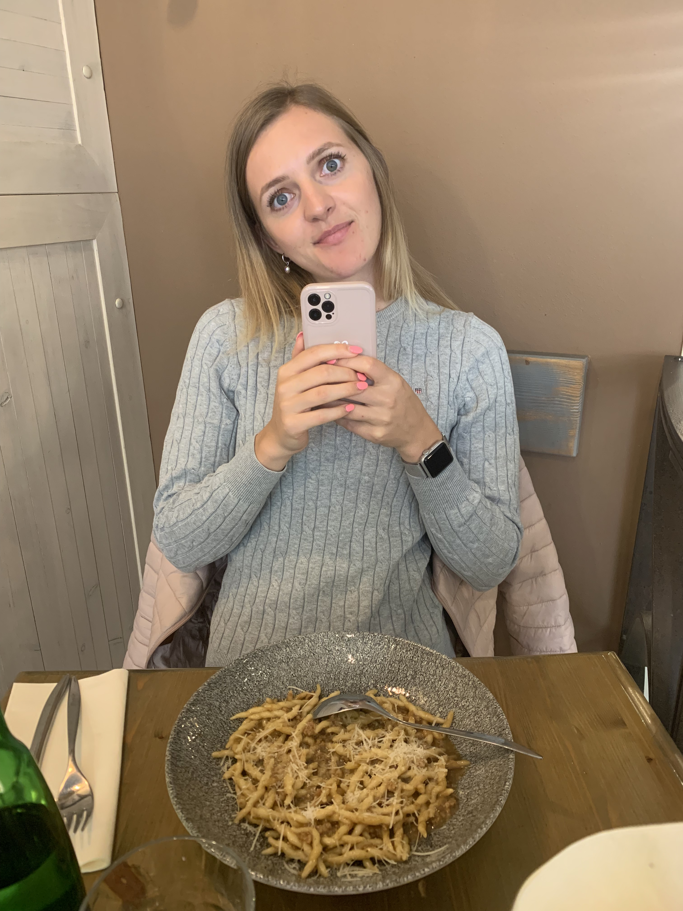

„Rodiče tě milují, protože jsi jejich.
Děti tě milují, protože jsi jim dala život.
Ale manžel miluje svoji ženu čistě a bez podmínek proto, že si tě vybral. Ze všech lidí na světě jsem si vybral právě tebe, protože s tebou chci tvořit rodinu a žít celý svůj život.“

Náš den • Přesně po 5 letech
Půjdeš se mnou na rande a večeři?
22. září 2026
Bude to přesně 5 let od našeho nezapomenutelného randíčka v Praze s výborným jídlem.

✨ Setři vrstvu a odhal vzpomínku ✨
Pro to nejdůležitější v životě
„Vím, že tě občas potrápím... ale chci, abys věděla, že jsi pro mě to nejvíc na celém světě.